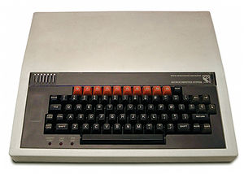

Running (a subset) of python on the BBC Micro
Yes, the one from the 80's. Yes, I'm a little mad.
Q Misell @TheEnbyperorLast year
Python on a Beeb?!?!?! You're joking right?
5.0MiB

32KiB or 0.03125MiB (~16KiB usable)
MicroPython?
How does python actually work?
Interpreted
BASIC¯\_(ツ)_/¯
PythonCompiled
CSophie Wilson

>>> import dis
>>> dis.dis("40+2")
1 0 LOAD_CONST 2 (42)
2 RETURN_VALUE
>>>